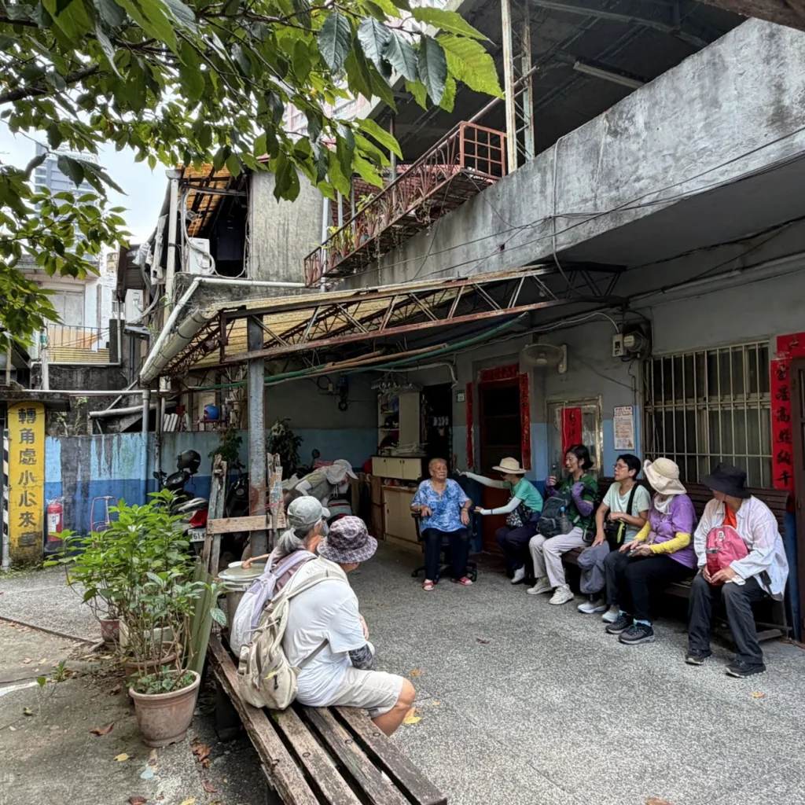
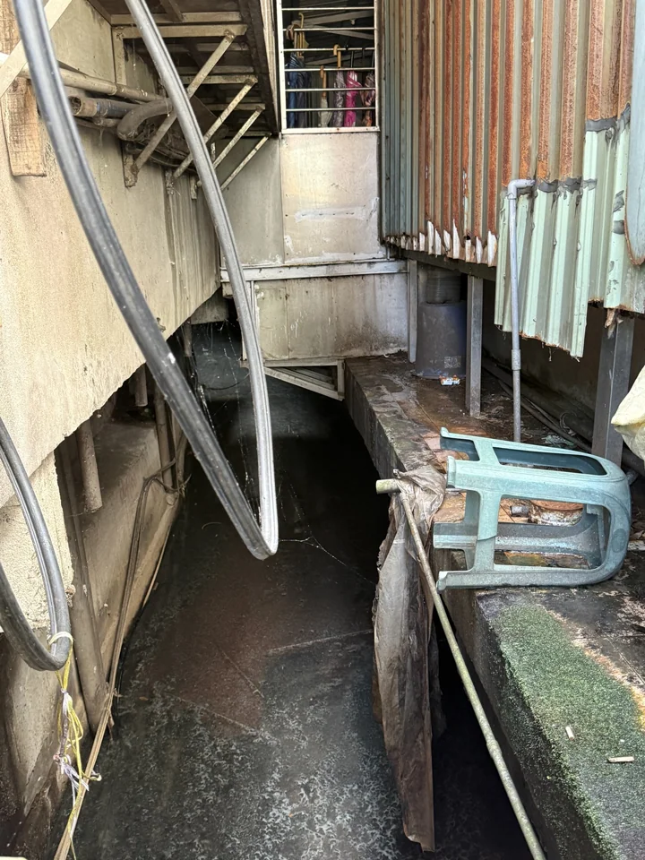

沿著新店溪走，從水岸轉進街巷，再往獅頭山麓去。到了瑠公圳和大坪林圳，順著水曾經流過的地方看，聚落的往事也一點一點浮現。有人記得山腰的大佛，有人循著圳道尋訪老聚落。翻開這些走讀紀錄，還能讀到水路之外，街坊之間彼此照應的日常。

從新店捷運站走到獅頭山腳，沿途看山腰大佛、檳榔坑溪與煤礦遺跡。
從瑠公圳頭走向力行聚落，讀圳邊人家的生活記憶。
循著大坪林圳的支線，聽耆老談農耕、水圳與生活。
走向聖三堂，也透過影片與文章認識地方的人和照顧的故事。